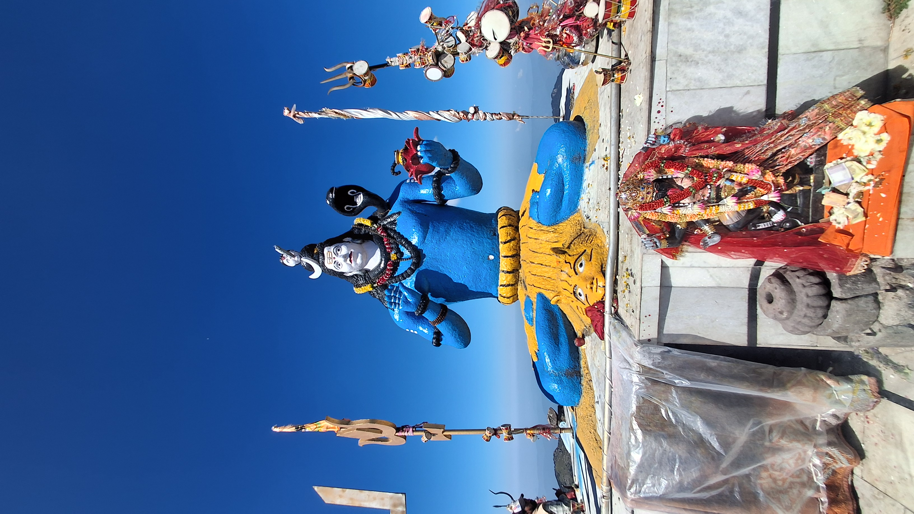

<!-- =====================================================
     TRAVEL STORIES SECTION
     HTML + CSS IN ONE FILE
===================================================== -->

<style>

    /* =========================
       TRAVEL STORIES SECTION
    ========================= */

    .travel-stories-section {
        width: 100%;
        padding: 80px 7%;
        background: #f7f7f7;
        box-sizing: border-box;
    }

    /* Section Heading */

    .travel-stories-heading {
        text-align: center;
        margin-bottom: 50px;
    }

    .travel-stories-heading h2 {
        font-size: 42px;
        margin: 0 0 12px;
        color: #222;
        font-family: Arial, sans-serif;
    }

    .travel-stories-heading p {
        font-size: 17px;
        color: #666;
        margin: 0 auto;
        max-width: 650px;
        line-height: 1.6;
        font-family: Arial, sans-serif;
    }

    /* =========================
       STORIES GRID
    ========================= */

    .travel-stories-grid {
        display: grid;
        grid-template-columns: repeat(3, 1fr);
        gap: 30px;
        max-width: 1300px;
        margin: auto;
    }

    /* =========================
       STORY CARD
    ========================= */

    .travel-story-card {
        background: white;
        border-radius: 14px;
        overflow: hidden;
        box-shadow: 0 5px 20px rgba(0, 0, 0, 0.08);
        transition: all 0.3s ease;
    }

    .travel-story-card:hover {
        transform: translateY(-8px);
        box-shadow: 0 12px 30px rgba(0, 0, 0, 0.15);
    }

    /* Story Image */

    .travel-story-card img {
        width: 100%;
        height: 240px;
        object-fit: cover;
        display: block;
    }

    /* Story Content */

    .travel-story-content {
        padding: 25px;
    }

    .travel-story-category {
        font-size: 12px;
        font-weight: bold;
        letter-spacing: 1.5px;
        color: #777;
        font-family: Arial, sans-serif;
    }

    .travel-story-content h3 {
        font-size: 23px;
        line-height: 1.35;
        margin: 12px 0;
        color: #222;
        font-family: Arial, sans-serif;
    }

    .travel-story-content p {
        font-size: 15px;
        line-height: 1.7;
        color: #666;
        margin-bottom: 20px;
        font-family: Arial, sans-serif;
    }

    /* Read More Button */

    .travel-read-more {
        display: inline-block;
        color: #111;
        text-decoration: none;
        font-size: 15px;
        font-weight: bold;
        padding-bottom: 5px;
        border-bottom: 2px solid #111;
        transition: 0.3s ease;
        font-family: Arial, sans-serif;
    }

    .travel-read-more:hover {
        color: #777;
        border-color: #777;
    }


    /* =========================
       TABLET
    ========================= */

    @media (max-width: 950px) {

        .travel-stories-grid {
            grid-template-columns: repeat(2, 1fr);
        }

        .travel-stories-section {
            padding: 65px 5%;
        }

    }


    /* =========================
       MOBILE
    ========================= */

    @media (max-width: 600px) {

        .travel-stories-section {
            padding: 55px 5%;
        }

        .travel-stories-heading h2 {
            font-size: 32px;
        }

        .travel-stories-heading p {
            font-size: 15px;
        }

        .travel-stories-grid {
            grid-template-columns: 1fr;
        }

        .travel-story-card img {
            height: 220px;
        }

        .travel-story-content {
            padding: 22px;
        }

        .travel-story-content h3 {
            font-size: 21px;
        }

    }

</style>


<!-- =====================================================
     TRAVEL STORIES
===================================================== -->

<section class="travel-stories-section" id="travel-stories">

    <div class="travel-stories-heading">

        <h2>Travel Stories</h2>

        <p>
            Stories, memories and adventures from my journeys
            through mountains, trails and roads.
        </p>

    </div>


    <div class="travel-stories-grid">


        <!-- =========================
             STORY 1
        ========================= -->

        <div class="travel-story-card">

            

            <div class="travel-story-content">

                <span class="travel-story-category">
                    MY TRIP • CHURDHAR
                </span>

                <h3>
                    Churdhar Trek: My Journey Through the Mountains
                </h3>

                <p>
                    A journey through the forests, mountain trails and
                    beautiful landscapes of Churdhar. From the beginning
                    of the trek to reaching the summit.
                </p>

                <a
                    href="churdhar-story.html"
                    class="travel-read-more"
                >
                    Read Full Story →
                </a>

            </div>

        </div>


    </div>

</section>
